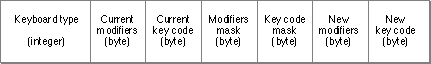

Legacy Document
Important: The information in this document is obsolete and should not be used for new development.
Important: The information in this document is obsolete and should not be used for new development.


Key-Remap Resource (Type 'itlk')
The key-remap resource (resource type'itlk') is used by theKeyTranslatefunction to ensure that all international keyboard layouts work on all Macintosh keyboards. The key-remap resource specifies how to remap the virtual key codes produced by certain key combinations beforeKeyTranslateconverts the virtual key codes to character codes with a keyboard-layout ('KCHR') resource.KeyTranslateis described in the chapter "Event Manager" in Inside Macintosh: Macintosh Toolbox Essentials.There is one key-remap resource per keyboard-layout resource that needs it. The
'itlk'resource has the same resource ID as the keyboard-layout resource with which it is associated. The Operating System loads key-remap resources from the System file only.The key-remap resource consists of an integer count of entries followed by a set of 8-byte entries. Figure C-5 shows the format of an entry.
Figure C-5 Format of an entry in the key-remap resource
 Before the
KeyTranslatefunction begins processing with the keyboard-layout resource, it determines which entry in the key-remap resource to use. It tests each entry in the key-remap resource to see whether
If all three match,
- the actual keyboard type matches the keyboard type element
- the product of an
ANDoperation on the actual virtual key code with the key code mask matches the current key code element- the product of an
ANDoperation on the actual modifiers with the modifiers mask matches the current modifiers element
KeyTranslatesubstitutes the new modifiers and virtual key code from that entry before applying them to the keyboard-layout resource.To allow for a more compact table when several virtual key codes produced from one key (using different modifiers) are all mapped together to a different key, an additional step is taken.
KeyTranslateuses the modifiers mask and key-code mask in the key-remap entry to produce a number of new modifiers and virtual key codes. Here is how a single entry can remap all modifier combinations for a given key:
- An
ANDoperation is performed on the new modifiers and new virtual key code with the modifiers mask and the key-code mask from the entry.- An
ANDoperation is performed on the actual modifiers and actual virtual key code with the 1's complement of the modifiers mask and key code mask from the entry.- The
ORof these two operations is the final result that is used for key translation.
- Note
- If the keyboard type is 259 (the ID for the ISO layout of the small Macintosh 512K Keyboard), the third field in the key-remap resource (which usually contains the current virtual key code) consists of the raw key code. See Table C-1 on page C-4 of this appendix for a list of the keyboard types.